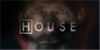

Кинопоиск
Открой мир кино с намиРейтинг ожиданий
Пусть к вам проникнет наше настроение и останется только хорошее впечатление! Наслаждайтесь просмотром и хорошого настроения!
Новый Человек-паук (2012)
Получив сверхчеловеческие способности, Питер Паркер пытается вести нормальную жизнь и разобраться, кем же он теперь стал. Но сейчас на нормальную жизнь ...
Смотреть сейчасАвраам Линкольн: Охотник на вампиров (2012)
Убита мать президента Линкольна, и все указывает на вампиров. После этой трагедии Линкольн объявляет войну до полного уничтожения ...
Смотреть сейчасТемный рыцарь: Возрождение легенды (2012)
Восемь лет спустя после событий Темного Рыцаря, в Готэм приходит новый лидер террористов, Бэйн, неся с собой хаос и разрушения ...
Смотреть сейчасЧто идет в кинотеатрах?
-
Премьеры России — 17 мая
Российский прокат в этот раз пестрит многообразием. Собрались в одну неделю нескромная комедия «Диктатор» с Сашей Бароном Коэном, хлесткий боевик «Напролом», спродюсированный ...
-
Премьеры России — 3 мая
В России стартует один из важнейших проектов года — масштабные «Мстители» Джосса Уидона, объединяющие в одном кинопространстве Железного Человека...
Зрительский взгляд | «Диктатор»
CamiRojas: «What the fuck did you call me?» Адмирал-генерал Аладин, безусловно, очень влиятельный, амбициозный, жестокий и самовлюблённый лидер североафриканского государства под названием Вадия. Для него не существует никаких правил, кроме тех, что он придумал сам. В его стране царит произвол, жесточайшая диктатура, угнетение и полное уничижение простого народа. Аладин, прям как тот самый мелкий воришка Аладин из диснеевского мультика, — это (...)
Новости сериалов
-
Дэвид Шор о финале House M.D.
Итак, 21-го мая мы официально распрощались с сериалом House M.D. («Доктор Хаус»). У нас осталось восемь лет воспоминаний и с десяток не отвеченных вопросов. Ресурс TVLine разыскал одного из создателей шоу, Дэвида Шора, чтобы высказать...
Дата: 26.05.2012 00:57. Комментариев: 261 Подробнее -
Дэвид Моррисси о роли Губернатора в The Walking Dead
Специально для тех поклонников сериала The Walking Dead («Ходячие мертвецы»), которые не могут дождаться выхода третьего сезона, ресурс TVGuide взял небольшое интервью у британского актера Дэвида Моррисси.
Дата: 26.05.2012 00:57. Комментариев: 261 Подробнее